Livestock Sales
Quality livestock selected according to farming requirements.
PREMIUM LIVESTOCK & FARMING
High-quality dairy breeds, genetics and professional farming support for farmers across Kenya.
ABOUT US
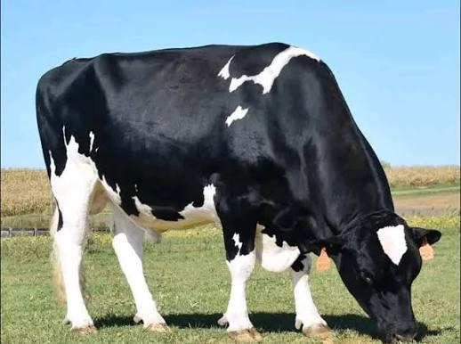
We provide farmers with quality livestock, breeding support and practical agricultural solutions designed for Kenyan farming conditions.
✓ Research Focus
Science-based livestock improvement.
✓ Genetics
Quality breeding programmes.
✓ Technology
Modern agricultural systems.
✓ Vet Support
Professional livestock support.
OUR CATALOG
OUR SERVICES
Quality livestock selected according to farming requirements.
Livestock transportation services to different regions.
Livestock management, breeding and veterinary guidance.
Dairy production and milk handling support.
RESEARCH & FARMER SUPPORT
KALRO's dairy work spans livestock genetics, pasture and fodder, feeds and nutrition, animal health, dairy products and farmer outreach.
Breeding and genetic improvement support for productive dairy herds.
Fodder production, hay, seed and silage options for livestock nutrition.
Feed and nutrition guidance aimed at healthy, productive animals.
Practical animal-health and farm-management support.
Dairy product, quality-control and post-harvest support.
Knowledge sharing, farmer support and agricultural outreach.
FIND US
Visits are by appointment. The farm is in Naivasha, Nakuru County, along Nakuru Road.
📍 Address
KALRO Naivasha Livestock Farm, Nakuru Road, Naivasha, Nakuru County, Kenya
🕒 Visiting hours
Monday – Saturday, 8am – 5pm
📞 WhatsApp
+254 117 447 640
Research, livestock, breeding, feeds and farmer support in the Rift Valley.
Contact the farm teamLIVESTOCK TOOL
Answer a few questions to get a suitable recommendation.
DAIRY FARMING IN KENYA
KALRO Dairy Institute provides information and practical support around dairy livestock, breeding, animal nutrition, fodder, chicks and farm services for farmers in Kenya. Explore dairy cattle breeds such as Friesian, Jersey and Ayrshire, compare livestock options, and contact the farm team through WhatsApp for availability and ordering.
Farmers searching for dairy cattle in Kenya, pedigree dairy breeds, animal feeds and hay, fodder seeds, silage, or livestock farming support can use this catalogue to find relevant products and services.
FREQUENTLY ASKED QUESTIONS
The catalogue includes Friesian, Jersey, Ayrshire and other dairy livestock options. Availability can change, so contact the team before ordering.
Yes. The catalogue includes hay, fodder, pasture seed, silage and supplements for livestock feeding.
Yes. Select View Order on a product, choose the quantity, and use the WhatsApp order button to send the product details.
The site provides information about livestock sales, transport and delivery, veterinary support and milk-processing support.
FARM GALLERY
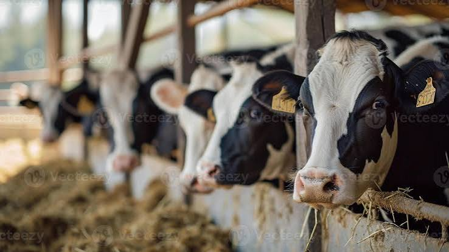
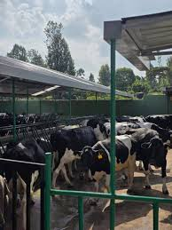
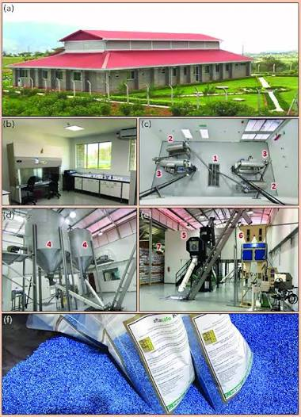
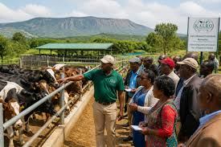
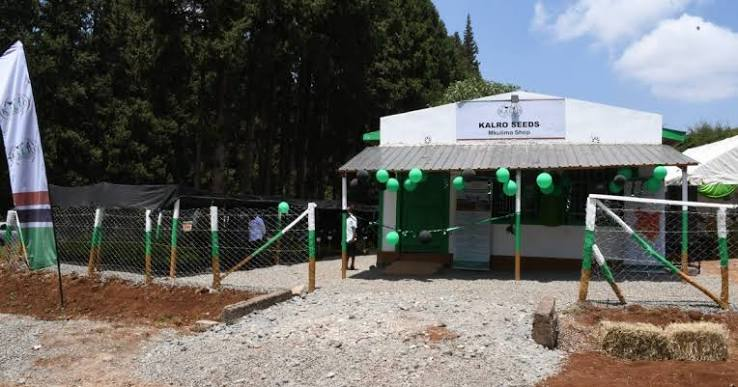
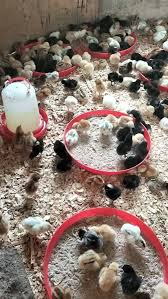
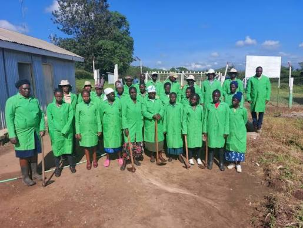
CONTACT US
Connect with our livestock, dairy and farming experts.
ANIMAL FEEDS & FODDER
Hay bales, fodder, seeds, silage and molasses available in bulk from KALRO DTI Naivasha. Quality feed for productive livestock.
Contact us for availability, prices and farm delivery.
+254 117 447 640KALRO POULTRY
Healthy chicks available at different ages. Place your order directly through WhatsApp.
MORE FARM PRODUCTS
Additional feeds, eggs, pasture planting materials and farm supplies available from KALRO Naivasha.
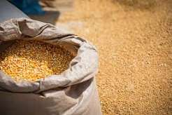
Dry maize supplied in a 90kg bag for animal feed or milling.
KSh 3,500 Order on WhatsAppAuthentic free-range Kienyeji eggs with rich yolks and full flavour.
KSh 480 / trayOrder on WhatsApp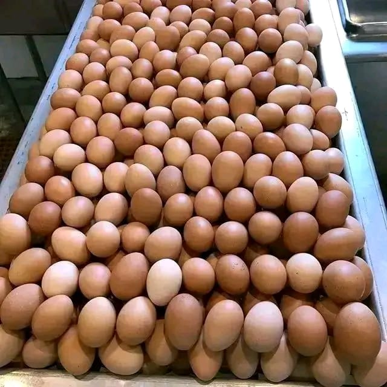
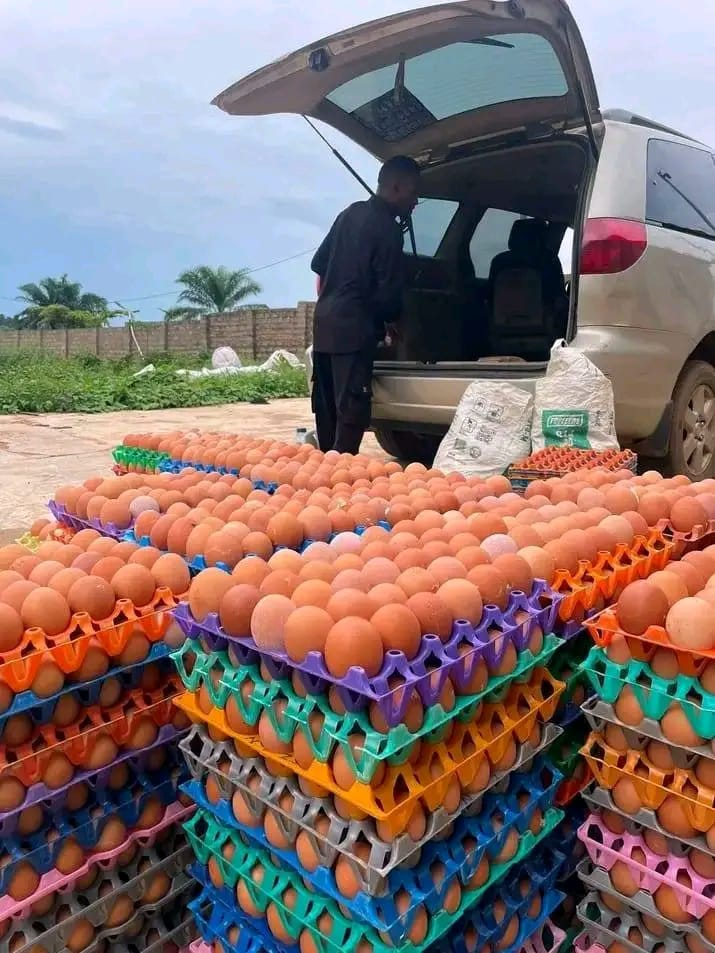
FARMER FEEDBACK
Explore customer stories in an immersive review carousel. The story changes automatically every 4 seconds, or you can browse manually.
“Bought 5 in-calf Friesian heifers from KALRO Naivasha. Milk yield is exceptional and delivery was smooth.”
Ann WanjikuNakuru“Lucerne hay and Boma Rhodes seeds arrived on time. Feed quality is good and my cows’ condition has improved.”
Stephen WafulaBungoma“The matured Holstein cow matched the description perfectly. Producing 25L daily and the team followed up after delivery.”
James KoechEldoret“Bought a breeding pair of Saanen goats. They arrived healthy and are already kidding. Excellent quality.”
Samuel NaingisaNarok“The feed selection made it easy to compare options before ordering. The team was helpful with product questions.”
Customer feedbackDetails to be confirmed“The fodder and pasture options are clearly presented, and ordering through WhatsApp is convenient.”
Customer feedbackDetails to be confirmed“The livestock catalogue is straightforward to browse and the order process is simple on mobile.”
Customer feedbackDetails to be confirmed“I liked having feeds, chicks and farm essentials in one place with direct inquiry buttons.”
Customer feedbackDetails to be confirmedGET IN TOUCH
Contact manager Ibrahim Kassim for availability, pricing and delivery arrangements.
1. Reply with 1 — For order placement
2. Reply with 2 — For returns, refunds & order tracking
3. Reply with 3 — To speak to a representative
4. Reply with 4 — To book a farm visit
VISIT KALRO NAIVASHA
Request a visit to discuss livestock, feeds, chicks, breeding or farm services. Complete the form and include your payment transaction code so the team can review your request.
If you purchase animals during your visit, the KSh 15,000 deposit is deducted from the purchase price. If you do not purchase animals, the stated terms provide for a refund. Confirm the process with staff.
The guidebook is a required part of the appointment process. Read it before submitting your booking request.
Open / download guidebook (PDF) ↗Questions? Call or WhatsApp +254 117 447 640. Visiting hours: Monday–Saturday, 8:00 a.m.–5:00 p.m.